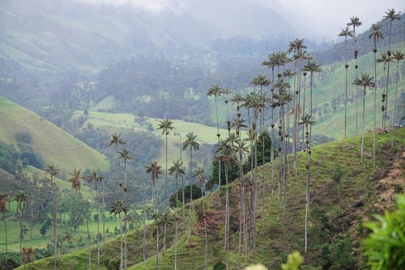

Humid tropical climate has thick vegetation that grows in two layers.
 Lightning is hotter than the surface of the Sun — roughly five times hotter.
Lightning is hotter than the surface of the Sun — roughly five times hotter.
Bolivia’s weather differs greatly depending on the altitude and topography of the region.
Long Island is bordered by the East River, Long Island Sound, and the Atlantic Ocean.
 Lightning flashes more than 3 million times a day worldwide
Lightning flashes more than 3 million times a day worldwide
The Icelandic winter is relatively mild for its latitude.